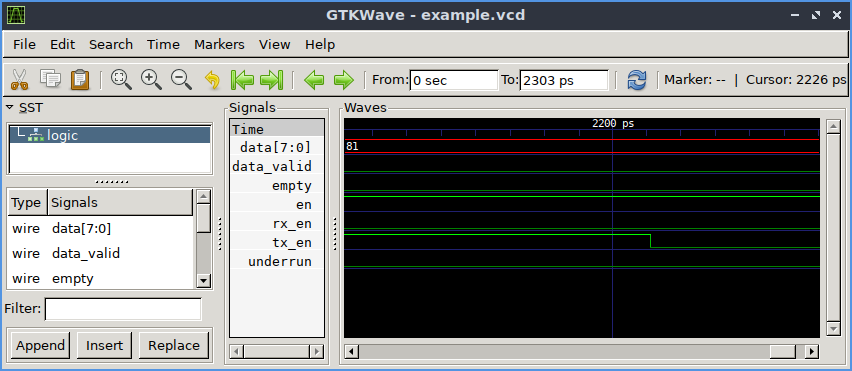

Waveforms With GTKWave¶
GTKWave is a VCD waveform viewer based on the GTK library. This viewer support VCD and LXT formats for signal dumps. GTKWAVE is available on github here. Most Linux distributions already include gtkwave prepackaged.
Generating VCD/FST files for GTKWAVE ———————————— Waveform dumps are written by the Icarus Verilog runtime program vvp. The user uses $dumpfile and $dumpvars system tasks to enable waveform dumping, then the vvp runtime takes care of the rest. The output is written into the file specified by the $dumpfile system task. If the $dumpfile call is absent, the compiler will choose the file name dump.vcd or dump.lxt or dump.fst, depending on runtime flags. The example below dumps everything in and below the test module:
// Do this in your test bench
initial
begin
$dumpfile("test.vcd");
$dumpvars(0,test);
end
By default, the vvp runtime will generate VCD dump output. This is the default because it is the most portable. However, when using gtkwave, the FST output format is faster and most compact. Use the “-fst” extended argument to activate LXT output. For example, if your compiled output is written into the file “foo.vvp”, the command:
% vvp foo.vvp -fst <other-plusargs>
will cause the dumpfile output to be written in FST format. Absent any specific $dumpfile command, this file will be called dump.fst, which can be viewed with the command:
% gtkwave dump.fst
A Working Example¶
First, the design itself:
module counter(out, clk, reset);
parameter WIDTH = 8;
output [WIDTH-1 : 0] out;
input clk, reset;
reg [WIDTH-1 : 0] out;
wire clk, reset;
always @(posedge clk)
out <= out + 1;
always @reset
if (reset)
assign out = 0;
else
deassign out;
endmodule // counter
Then the simulation file:
module test;
/* Make a reset that pulses once. */
reg reset = 0;
initial begin
$dumpfile("test.vcd");
$dumpvars(0,test);
# 17 reset = 1;
# 11 reset = 0;
# 29 reset = 1;
# 5 reset =0;
# 513 $finish;
end
/* Make a regular pulsing clock. */
reg clk = 0;
always #1 clk = !clk;
wire [7:0] value;
counter c1 (value, clk, reset);
initial
$monitor("At time %t, value = %h (%0d)",
$time, value, value);
endmodule // test
Compile, run, and view waveforms with these commands:
% iverilog -o dsn counter_tb.v counter.v
% vvp dsn
% gtkwave test.vcd &
Click on the ‘test’, then ‘c1’ in the top left box on GTKWAVE, then drag the signals to the Signals box. You will be able to add signals to display, scanning by scope.